Elaboración de nuestro pan
La elaboración del pan es un conjunto de varios procesos en cadena. Comienza con los ingredientes en sus proporciones justas y las herramientas para su elaboración dispuestas para realizar las operaciones (mise en place), y acaba con el pan listo para ser servido.
- Mezcla de la harina con el agua (así como otros ingredientes), proceso de trabajar la masa.
- Reposo, para hacer 'elevar' la masa (solo si se incluyó levadura).
- Horneado, en el que simplemente se somete durante un período la masa a una fuente de calor para que se cocine.
- Enfriado: tras el horneado se deja reposar el pan hasta que alcance la temperatura ambiente.
1 / 16
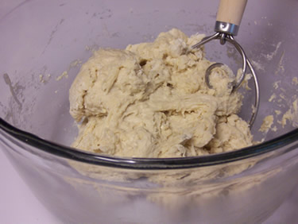
2 / 16
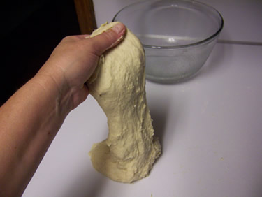
3 / 16
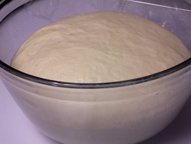
4 / 16
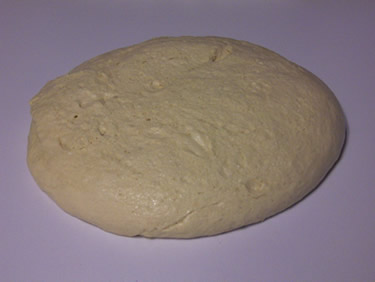
5 / 16
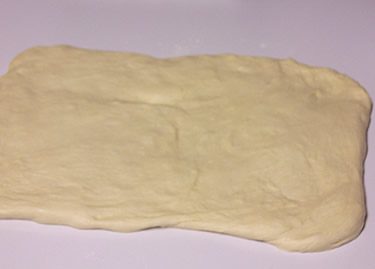
6 / 16
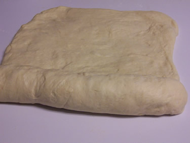
7 / 16
8 / 16
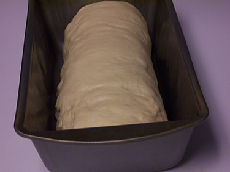
9 / 16
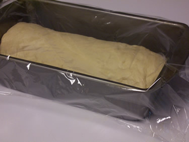
10 / 16

11 / 16
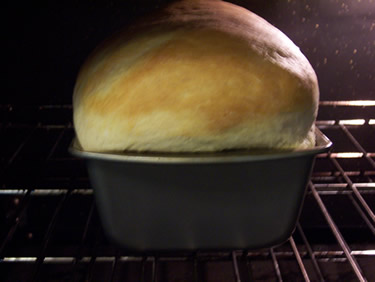
12 / 16
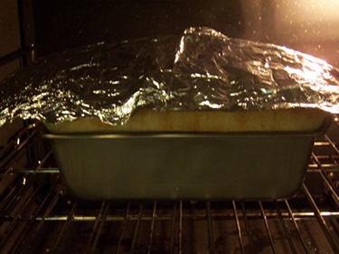
13 / 16
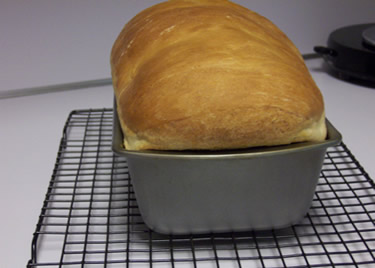
14 / 16
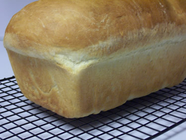
15 / 16
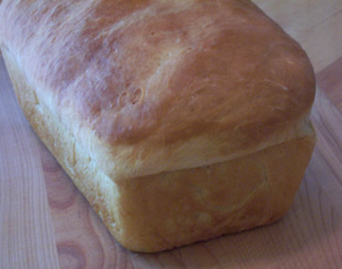
16 / 16
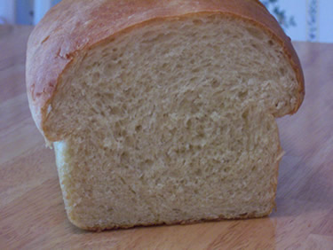
Nuestros productos
Gracias a nuestra elaboración y recetas que hemos ido refinando generación tras generación, nos permite sacarle el mayor partido a nuestros productos frescos de origen 100% natural sin utilizar conservantes, edulcorantes, etc.
Actualmente, contamos con estos productos en nuestra carta:
Pasteles
Pastel de cabello de angel, tarta de fresa, tarta de chocolate, tarta de zanahoria...
Ver productos
Empanadas
Empanada de carne, empanada de atún, empanada vegetal y empanada de jamón y queso.
Ver productos
Contacto
Póngase en contacto con nosotros si tiene alguna duda o quiere reservar algún producto para una fecha señalada. Solo tiene que cubrir este pequeño formulario.